HLOOKUP: mencari data ke samping
HLOOKUP sama dengan VLOOKUP, tetapi tabelnya disusun mendatar: kunci ada di baris paling atas.
=HLOOKUP(dicari; tabel; baris_ke; [persis])
| dicari | Nilai yang dicari di baris pertama |
|---|---|
| tabel | Seluruh tabel |
| baris_ke | Nomor baris yang diambil |
| persis | FALSE untuk persis |
Langkah praktik
- Pastikan kunci berada di baris paling atas tabel.
- Ketik =HLOOKUP( lalu kunci, tabel, nomor baris, FALSE.
- Tekan Enter.
Tangkapan layar praktik
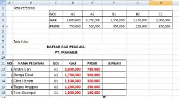
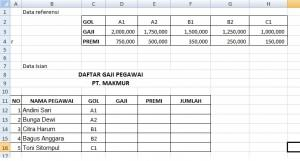
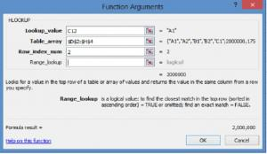
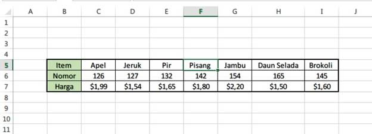
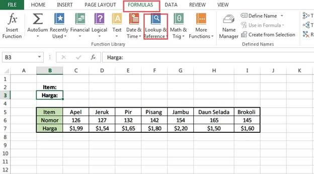
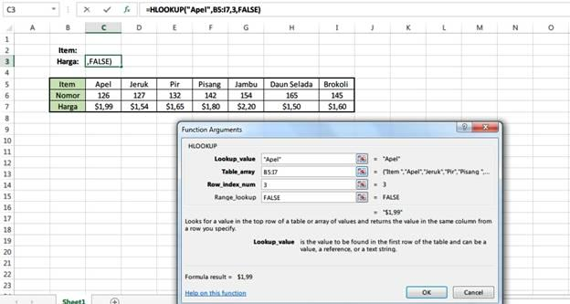
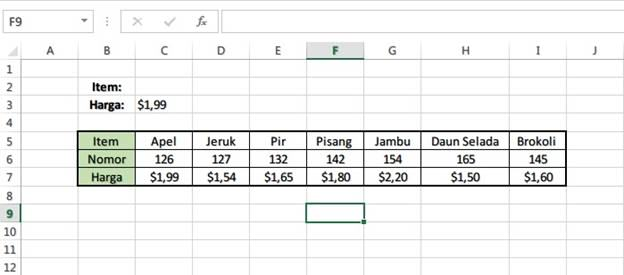
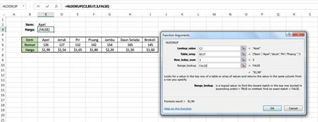
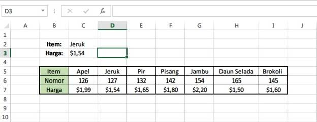
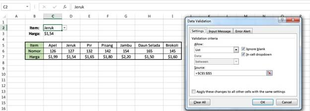
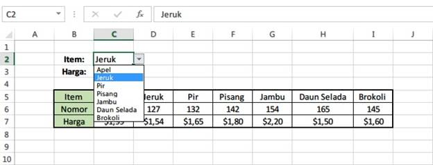